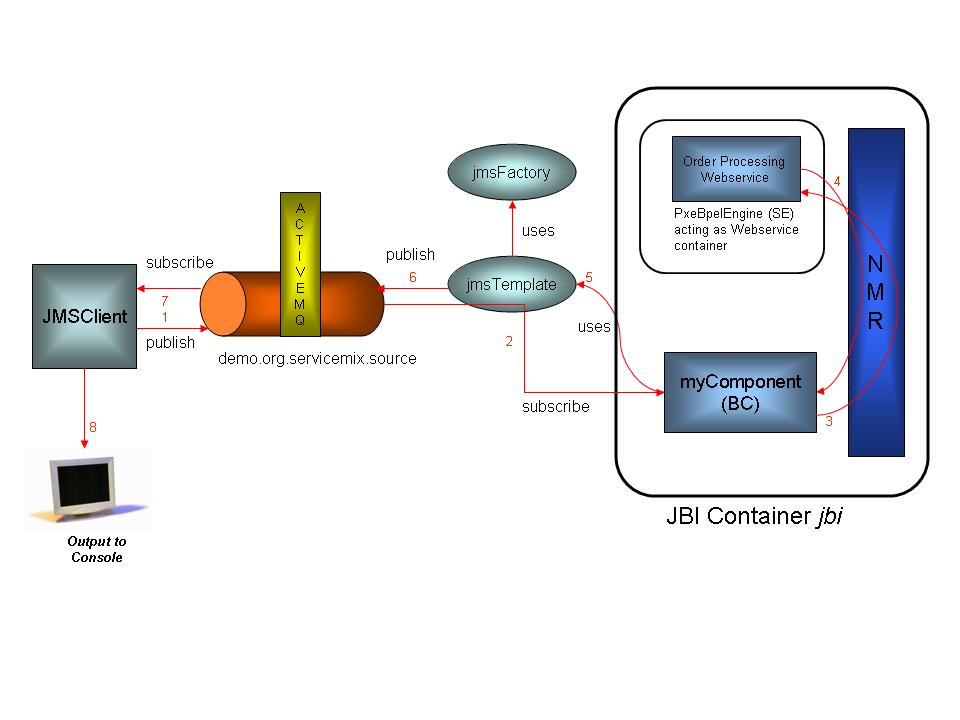

|
|
|
|
|
|
|
Download | Documentation | JavaDocs | Source | Wiki |
OverviewCommunity
DevelopersComponents |
Overview of the ServiceMix 1.x BPEL ExampleThis document describes how to run ServiceMix's BPEL example and provides details about what it does. For information on the business use case, please refer to: Use Case for BPEL The BPEL example illustrates the following:
The XML code for the BPEL example is located in the ServiceMix installation directory under the examples\bpel directory in the servicemix.xml file. It is recommended that you refer to the servicemix.xml file while reading this document. This example has a client application, JMSClient, which sends a SOAP message to a ServiceMix binding component called myComponent. myComponent forwards the request to the PXE BPEL engine and waits for a response. In other words, JMSClient places a book order and myComponent receives the order and then sends it to the Webservice that takes orders. The client, JMSClient, and the binding component, myComponent, communicate via JMS; this communication is external to the ServiceMix JBI. myComponent and the PXE BPEL service engine communicate internally over the Normalized Message Router (NMR). Prerequisites to Run the BPEL ExampleThe following must be installed to run this example:
Running the BPEL ExampleBefore running this example, the following setup must be done. PXE has a JBI component and deployment unit, which can be auto-deployed in any JBI compliant container, in this case ServiceMix. To use PXE with ServiceMix, the PXE deployment unit must be placed in the install directory so it will be auto-deployed in ServiceMix. NOTE: The PXE deployment unit has already been placed into the install directory for you - take a look at the servicemix_install_dir\examples\bpel\install directory to see the PXE jar file. Perform the following steps to run the BPEL example:
Stopping the BPEL ExampleTo terminate the BPEL example type "CTRL-C" in the command shell in which it is running and answer "y" to the "Terminate batch job (y/n)?" question.
How it WorksThe diagram below illustrates the logical flow of the program through the BPEL components:
BPEL Logical Flow Diagram 
The logical flow of the program is:
Typical output looks like the following:
ServiceMix ESB: 1.0 Loading ServiceMix from file: servicemix.xml [INFO] XmlBeanDefinitionReader - -Loading XML bean definitions from file C:\exist\servicemix\servicemix-1.0.1\examples\bpel\servicemix.xml] [INFO] CollectionFactory - -JDK 1.4+ collections available [INFO] CollectionFactory - -Commons Collections 3.x available [INFO] FileSystemXmlApplicationContext - -Bean factory for application context [org.springframework.context.support.FileSystemXmlApplicationContext;hashCode=110 2920]: org.springframework.beans.factory.support.DefaultListableBeanFactory defining beans [jndi,broker,transactionManager,jmsFactory,jbi]; root of BeanFactory hierarchy[INFO] FileSystemXmlApplicationContext - -5 beans defined in application context [org.springframework.context.support.FileSystemXmlApplicationContext;hashCode=1102920] [INFO] FileSystemXmlApplicationContext - -Unable to locate MessageSource with name 'messageSource': using default [org.springframework.context.support.DelegatingMessageSource@18e2b22] [INFO] FileSystemXmlApplicationContext - -Unable to locate ApplicationEventMulticaster with name 'applicationEventMulticaster': using default [org.springframework.context.event.SimpleApplicationEventMulticaster@13caecd] [INFO] DefaultListableBeanFactory - -Pre-instantiating singletons in factory [org.springframework.beans.factory.support.DefaultListableBeanFactory defining beans [jndi,broker,transactionManager,jmsFactory,jbi]; root of BeanFactory hierarchy] [INFO] DefaultListableBeanFactory - -Creating shared instance of singleton bean'jndi' [INFO] DefaultListableBeanFactory - -Creating shared instance of singleton bean 'broker' [INFO] SpringBrokerContainerFactory - -Loading ActiveMQ broker from configuration: class path resource [activemq.xml] [INFO] ActiveMQBeanDefinitionReader - -Loading XML bean definitions from class path resource [activemq.xml] [INFO] ActiveMQBeanFactory - -Creating shared instance of singleton bean 'broker' [INFO] ActiveMQBeanFactory - -Creating shared instance of singleton bean 'memoryManager' [INFO] ActiveMQBeanFactory - -Creating shared instance of singleton bean 'derby-ds' [INFO] ActiveMQBeanFactory - -Creating shared instance of singleton bean 'mysql-ds' [INFO] BrokerContainerImpl - -ActiveMQ 3.1-M6 JMS Message Broker (ID:el2tong-1095-1129854563062-0:0) is starting [INFO] BrokerContainerImpl - -For help or more information please see: http://www.logicblaze.com [INFO] JDBCPersistenceAdapter - -Database driver recognized: [apache_derby_embedded_jdbc_driver] [INFO] DefaultJDBCAdapter - -Could not create JDBC tables; they could already exist. Failure was: CREATE TABLE ACTIVEMQ_MSGS(ID INTEGER NOT NULL, CONTAINER VARCHAR(250), MSGID VARCHAR(250), MSG BLOB, PRIMARY KEY ( ID ) ) Message: Table/View 'ACTIVEMQ_MSGS' already exists in Schema 'APP'. SQLState: X0Y32 Vendor code: 20000 [INFO] DefaultJDBCAdapter - -Could not create JDBC tables; they could already exist. Failure was: CREATE TABLE ACTIVEMQ_TXS(XID VARCHAR(250) NOT NULL, PRIMARY KEY ( XID )) Message: Table/View 'ACTIVEMQ_TXS' already exists in Schema 'APP'. SQLState: X0Y32 Vendor code: 20000 [INFO] DefaultJDBCAdapter - -Could not create JDBC tables; they could already exist. Failure was: CREATE TABLE ACTIVEMQ_ACKS(SUB VARCHAR(250) NOT NULL, CONTAINER VARCHAR(250) NOT NULL, LAST_ACKED_ID INTEGER, SE_ID INTEGER, SE_CLIENT_ID VARCHAR(250), SE_CONSUMER_NAME VARCHAR(250), SE_SELECTOR VARCHAR(250), PRIMARY KEY ( SUB, CONTAINER )) Message: Table/View 'ACTIVEMQ_ACKS' already exists in Schema 'APP'. SQLState: X0Y32 Vendor code: 20000 [INFO] DefaultJDBCAdapter - -Could not create JDBC tables; they could already exist. Failure was: ALTER TABLE ACTIVEMQ_MSGS ADD EXPIRATION BIGINT Message: Column 'EXPIRATION' already exists in Table/View 'APP.ACTIVEMQ_MSGS'. SQLState: X0Y32 Vendor code: 20000 [INFO] JournalPersistenceAdapter - -Opening journal. [INFO] JournalPersistenceAdapter - -Opened journal: Active Journal: using 2 x 20.0 Megs at: ..\var\journal [INFO] JournalPersistenceAdapter - -Journal Recovery Started. [INFO] JournalPersistenceAdapter - -Journal Recovered: 0 message(s) in transactions recovered. [INFO] TcpTransportServerChannel - -Listening for connections at: tcp://el2tong:61616 [INFO] BrokerConnectorImpl - -ActiveMQ connector started: TcpTransportServerChannel@tcp://el2tong:61616 [INFO] BrokerContainerImpl - -ActiveMQ JMS Message Broker (ID:el2tong-1095-1129854563062-0:0) has started [INFO] DefaultListableBeanFactory - -Creating shared instance of singleton bean 'transactionManager' [INFO] DefaultListableBeanFactory - -Creating shared instance of singleton bean 'jmsFactory' [INFO] DefaultListableBeanFactory - -Creating shared instance of singleton bean 'jbi' [INFO] ActiveMQConnection - -channel status changed: Channel: TcpTransportChannel: Socket[addr=localhost/127.0.0.1,port=61616,localport=1096] has connected [INFO] BrokerContainerImpl - -Adding new client: ID:el2tong-1095-1129854563062-5:0 on transport: TcpTransportChannel: Socket[addr=/127.0.0.1,port=1096,localport=61616] [INFO] JBIContainer - -ServiceMix JBI Container (http://servicemix.org/) name: defaultJBI running version: ServiceMix. [INFO] JBIContainer - -Activating component for: [container=defaultJBI,name=myComponent,id=myComponent] with service: {uri:fivesight.com/examples/AsyncProcessJBI}JmsService component: org.servicemix.components.jms.JmsServiceComponent@1b82d69 [INFO] ComponentContextImpl - -Component: myComponent activated endpoint: {uri:fivesight.com/examples/AsyncProcessJBI}JmsService : myComponent DetailsThe following table provides more details about the function of each component and bean in the servicemix.xml file:
Related DocumentationFor more information on the following topics please see: For a brief explanation of the XML tags in the servicemix.xml file, please see: |